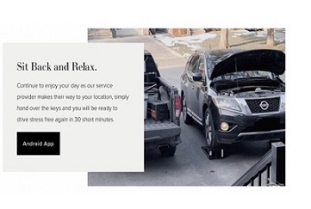
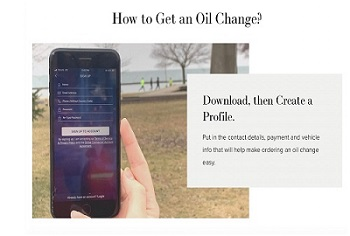
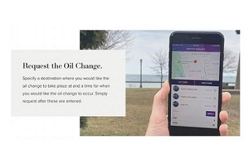

For this section, I had to make a comparison existing of similar domain, and for this I chose the theoilchange app, while going through the application specifications and features, I found that the app was not very friendly and did not inform and educate the users on the process of oil change as well knowledge regarding the different oils available. I aim to improve these imperfections in the development of my application.


